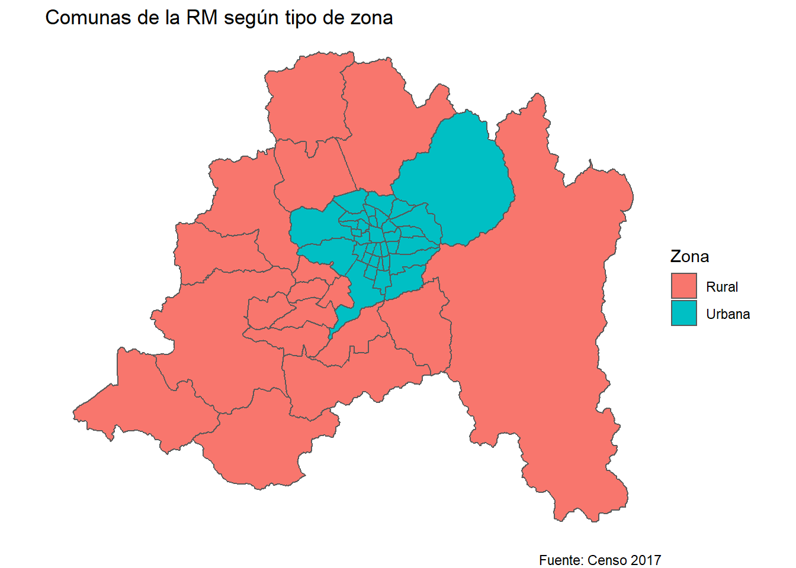

09A - Generación de mapas
Si quieres correr estos scripts localmente, acá puedes descargar el proyecto comprimido en .zip. Paquetes que necesitas tener instalados antes de comenzar con el proyecto:
tidyverse,sf,janitor.
Inicio: cargar paquetes
## Warning: package 'sf' was built under R version 4.0.3## Linking to GEOS 3.8.0, GDAL 3.0.4, PROJ 6.3.1Objetos geográficos (sf)
El paquete
sfpermite trabajar con información geográfica en R. Lo que vamos a cargar a continuación, con la funciónread_sf(), es un “shapefile”, la forma más común de almacenar información geográfica.Noten que este shapefile está en nuestra carpeta “shapefile_comunas”: no es solo un archivo, sino que varios.
Todos los shapefiles tienen por lo menos tres archivos: uno .shp (al que debemos apuntar con la función), otro .shx y otro .dbf. Es común que tengan también otros archivos: .sbx, .sbn, .shp.xml, .prj, etc.
Estos múltiples archivos son necesarios para leer la información geográfica, y necesitamos que estén todos en una misma carpeta, con el mismo nombre de archivo (distinta extensión).
Un consejo es que usualmente los shapefiles vendrán como una carpeta comprimida (.zip), y no queremos eliminar ninguno de los archivos dentro.
Los shapefiles registran información vectorial: puntos, líneas o polígonos en el espacio.
Vamos a cargar un shapefile con las comunas de Chile, cuya fuente es la Biblioteca del Congreso Nacional (2019):
Examinemos lo que cargamos con el visor de RStudio:
Operaciones de dplyr en objetos geográficos (sf)
La maravilla de sf es que el objeto geográfico se interpreta como una base de datos (data frame) tradicional de R, por lo que podemos utilizar cualquier operación de dplyr:
shp_comunas_13 <- shp_comunas %>%
clean_names() %>%
mutate(comuna_id = as.numeric(comuna_id)) %>%
filter(region_id == "13")De hecho, podemos cargar otros datos (no geográficos) y unirlos sin problemas. Carguemos una base con datos comunales, adaptada desde Políticamente (2020):
## Parsed with column specification:
## cols(
## comuna_id = col_double(),
## comuna = col_character(),
## zona = col_character(),
## ine2017_poblacion = col_double(),
## casen2013_porc_pobreza = col_double(),
## ine2013_porc_ruralidad = col_double(),
## idh2003 = col_double(),
## idh2003_salud = col_double(),
## idh2003_ed = col_double(),
## idh2003_ing = col_double(),
## n_imm = col_double(),
## n_imm_pc = col_double(),
## n_imm_by1000 = col_double(),
## gini = col_double(),
## porc_indigena = col_double(),
## tasa_controles_identidad = col_double(),
## tasa_detenciones_robos = col_double()
## )## # A tibble: 52 x 17
## comuna_id comuna zona ine2017_poblacion casen2013_porc_pobreza ine2013_porc_ruralidad idh2003 idh2003_salud idh2003_ed idh2003_ing n_imm n_imm_pc n_imm_by1000 gini porc_indigena tasa_controles_identidad tasa_detenciones_robos
## <dbl> <chr> <chr> <dbl> <dbl> <dbl> <dbl> <dbl> <dbl> <dbl> <dbl> <dbl> <dbl> <dbl> <dbl> <dbl> <dbl>
## 1 13124 Pudahuel Urbana 237938 9.31 0 0.735 0.805 0.744 0.655 6731 0.0283 28.3 0.459 447. 274. 1.66
## 2 13125 Quilicura Urbana 224468 9.24 0 0.782 0.873 0.807 0.668 17089 0.0761 76.1 0.465 358. 77.5 3.16
## 3 13301 Colina Rural 128760 7.28 17.0 0.726 0.82 0.704 0.654 9132 0.0709 70.9 0.533 302. 99.3 2.84
## 4 13302 Lampa Rural 97124 8.47 33.7 0.697 0.78 0.699 0.613 2724 0.0280 28.0 0.493 314. 123. 2.10
## 5 13303 Tiltil Rural 17940 9.84 47.0 0.706 0.791 0.701 0.626 311 0.0173 17.3 0.464 191. 250. 1.70
## 6 13104 Conchalí Urbana 141225 10.0 0 0.707 0.709 0.746 0.667 12862 0.0911 91.1 0.466 274. 338. 5.14
## 7 13107 Huechuraba Urbana 99019 5.20 0 0.737 0.781 0.742 0.689 5053 0.0510 51.0 0.511 416. 150. 9.38
## 8 13128 Renca Urbana 153266 8.99 0 0.709 0.76 0.728 0.638 5207 0.0340 34.0 0.457 477. 144. 2.07
## 9 13103 Cerro Navia Urbana 158641 15.4 0 0.683 0.735 0.693 0.622 6653 0.0419 41.9 0.453 664. 266. 1.49
## 10 13117 Lo Prado Urbana 113370 7.11 0 0.715 0.75 0.726 0.669 8762 0.0773 77.3 0.464 492. 199. 4.41
## # ... with 42 more rowsPodemos agregar estos datos a nuestro objeto geográfico sin problemas, con left_join():
Veamos el archivo que tenemos hasta ahora:
Primeros mapas con la sintaxis de ggplot2
ggplot2 trae un geom especial para entidades geográficas, geom_sf(). Su uso es muy simple:

La gracia es que podemos especificar mapeos estéticos, como fill:

(Ejercicio a)
Colorea cada comuna según su porcentaje de pobreza (esto se llama “choropleth”). Solo considera comunas urbanas en el mapa y utiliza la escala de colores viridis con scale_fill_viridis_c(). Tu código:
Por cierto, con estas dos líneas de código finales podemos conseguir un mapa sin las grillas de ggplot2 (también añadí un par de labs):
ggplot(data = shp_comunas_13_info,
mapping = aes(fill = zona)) +
geom_sf() +
labs(title = "Comunas de la RM según tipo de zona",
fill = "Zona",
caption = "Fuente: Censo 2017") +
theme_void() +
coord_sf(datum = NA)
Shape de cuarteles
(Ejercicio b)
Carga el shapefile de la carpeta “shapefile_cuarteles”: llámalo “shp_cuarteles”. Su fuente es Infraestructura de Datos Geoespaciales de Chile, 2019. Examínalo y luego crea un nuevo objeto “shp_cuarteles_13”, con mejores nombres (clean_names()) y solo con información de la Región Metropolitana. Tu código:
Crucialmente, estos datos son de puntos, mientras los anteriores eran polígonos.
Según un Reglamento Oficial de Carabineros (2000, p. 33), en este shapefile tenemos unidades y destacamentos:
## Simple feature collection with 7 features and 2 fields
## geometry type: GEOMETRY
## dimension: XYZ
## bbox: xmin: -71.46973 ymin: -34.17152 xmax: -69.96611 ymax: -33.00525
## z_range: zmin: 0 zmax: 0
## geographic CRS: WGS 84
## # A tibble: 7 x 3
## TIPO_DE_UN n geometry
## * <chr> <int> <GEOMETRY [°]>
## 1 COMISARIA 58 MULTIPOINT Z ((-71.21539 -33.68794 0), (-71.12008 -33.40134 0), (-70.93879 -33.67065 0), (-70.901...
## 2 TENENCIA 25 MULTIPOINT Z ((-71.45432 -33.89544 0), (-71.21137 -33.56896 0), (-71.11842 -33.51567 0), (-71.100...
## 3 SUBCOMISARIA 22 MULTIPOINT Z ((-70.97904 -33.67892 0), (-70.81537 -33.569 0), (-70.78973 -33.55822 0), (-70.77475...
## 4 RETEN 16 MULTIPOINT Z ((-71.46973 -33.97633 0), (-71.32402 -33.75717 0), (-71.15118 -33.65074 0), (-71.053...
## 5 TENENCIA CARRETERAS 5 MULTIPOINT Z ((-71.18889 -33.40567 0), (-71.03295 -33.69754 0), (-70.76079 -33.23231 0), (-70.735...
## 6 AVANZADA 1 POINT Z (-69.96611 -34.17152 0)
## 7 COMISARÍA 1 POINT Z (-70.66124 -33.41911 0)
- Unidades. Estarán consideradas en esta clasificación las Comisarías, Subcomisarías, Grupos y Escuadrones de las Escuelas, Grupos de Instrucción y, en general, los organismos que cuenten con dotación depersonal operativo para efectuar servicios policiales.
- Destacamentos. Se comprenderán dentro de esta clasificación a las Tenencias, Retenes, Garitas y Avanzadas.
Gráficos con más de una fuente de datos geográficos
Este sería el gráfico solo con la información de los cuarteles:

Usualmente queremos contextualizar estos puntos. Hacerlo con ggplot() es simple, asignando distintos argumentos “data =” a nuestros geoms:

Podríamos hacer filtros en las bases o añadir mapeos estéticos (argumento mapping =) en cada geom_sf(), también.
(Ejercicio c)
Grafica solo las comisarías en un mapa de las comunas urbanas de Santiago (coloreadas según alguna variable de interés en la base). Tu código:
(Ejercicio d)
La fuente de los cuarteles es IDE, la Infraestructura de Datos de Chile. En dicho sitio hay muchos shapefiles públicos. Elige uno de tu interés, cárgalo en R y genera un gráfico (mapa).